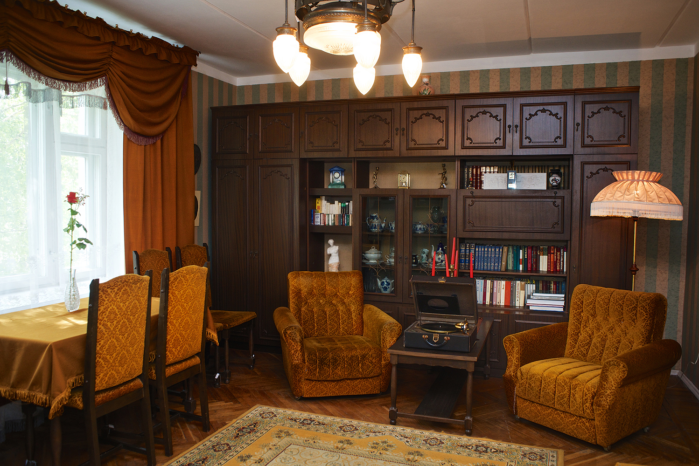

|  |
Контакты Телефон: +7 921 142 08 56. Адрес: г. Вологда, ул. Октябрьская, д.10, кв. 4. |
Музей-квартира Василия Белова торжественно открыт в Вологде 21 октября 2015 года. Мероприятия было приурочено ко дню рождения Василия Ивановича и стало одним из знаковых событий Года литературы в России.
В квартире по улице Октябрьской, дом 10, Белов жил с 1987 года, здесь им были написаны романы «Год великого перелома», «Час шестый», «Повесть об одной деревне», «Бухтины вологодские», автобиографическая повесть «Невозвратные годы», воспоминания о Василии Шукшине «Тяжесть креста», пьесы, многие рассказы, в том числе и ставший визитной карточкой Василия Белова – «Душа бессмертна», очерки, публицистические статьи, стихи.
…В эту квартиру и при жизни Белова не зарастала «народная тропа»: сюда приходили писатели, художники, композиторы, политики, священнослужители; здесь велись многочасовые разговоры о жизни, о литературе, о судьбах страны… Здесь бывали Распутин, Крупин, Личутин, Лихоносов, пел романсы Штоколов, с интересными речами выступал Савва Ямщиков…
Личная библиотека Василия Ивановича Белова насчитывает более четырех тысяч томов. Он интересовался историей и философией, постоянно читал и занимался самообразованием. Очень любил живопись, был коллекционером и сам неплохо рисовал: несколько его работ также представлены в музее.
Многие экспонаты в музее – подарки Василию Белову от многочисленных почитателей его таланта, в частности, в гостиной представлена икона Божьей матери, подаренная писателю Патриархом Московским и всея Руси Алексием II. Василий Белов не любил фотографироваться, но когда ему было 75 лет, он вдруг обратился к своему давнему другу, кинооператору, снявшему множество художественных и документальных, среди которых шукшинские «Печки-лавочки» и «Калина красная», Дмитрию Заболоцкому: «Пофотографируй меня…» Эти фотографии Заболоцкий передал в дар музею.
У каждого предмета в этом доме своя история, своя связь с прошлым, с тем временем, когда здесь жил и работал Василий Белов. На рабочем столе Василия Ивановича – две скульптуры: Шукшин и Пушкин. Печатная машинка с набранным текстом, томик Паскаля из серии ЖЗЛ. Притягивает взгляд выжженное пятно – в 1969 году Белов начал работать как драматург и, будучи атеистом, написал первую пьесу, в которой касался темы Бога. После, придя к Богу и воцерковившись, писатель сжег текст пьесы прямо на столе.
«Человек, посетивший этот музей, непременно выйдет отсюда окрыленным, вдохновленным, с какими-то новыми интересными мыслями», – уверена вдова писателя Ольга Сергеевна Белова.
{kind=link}
{kind=link}
{kind=link}
{kind=link}